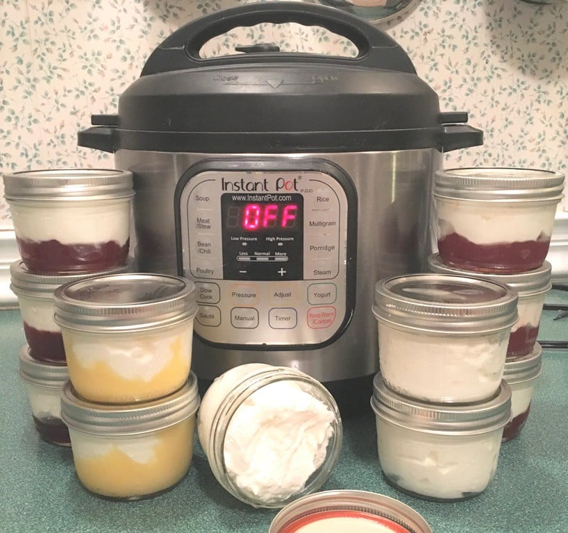

Description
Ever look for something low in calories and high in protein? Look no further. Non-fat greek yogurt is here! It's easy to make and cheap.
Ingredients
- non-fat milk (any milk will do)
- yogurt
Steps
- Pour milk into instant pot and hit the yogurt button until it says boil.
- After the instant pot beeps, take out the inner pot and let it cool to room temp.
- There may be things floating on top depending on what milk was used. Remove them.
- Mix in the yogurt.
- Place the innner pot back into the instant pot and hit the yogurt button until 8 hours is shown.
- Let the mixture incubate until the timer ends.
- Strain the yogurt of all the fluids then store in fridge and enjoy whenever.